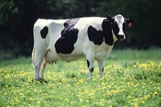

乳用牛の飼育数 都道府県ランキング
全47都道府県の順位と飼育数
乳用牛の飼育数が全国で最も多いのは北海道で、81万6,800 頭です。全国（129万3,000 頭）の63%を占めます。

| 順位 | 都道府県 | 飼育数 | 全国に占める割合 |
|---|---|---|---|
| 1位 | 北海道 | 81万6,800 頭 | 63% |
| 2位 | 栃木県 | 5万1,400 頭 | 4.0% |
| 3位 | 熊本県 | 4万1,900 頭 | 3.2% |
| 4位 | 岩手県 | 3万7,600 頭 | 2.9% |
| 5位 | 群馬県 | 3万1,000 頭 | 2.4% |
| 6位 | 千葉県 | 2万5,200 頭 | 1.9% |
| 7位 | 茨城県 | 2万2,900 頭 | 1.8% |
| 8位 | 愛知県 | 1万7,800 頭 | 1.4% |
| 9位 | 岡山県 | 1万5,100 頭 | 1.2% |
| 10位 | 宮城県 | 1万4,900 頭 | 1.2% |
| 11位 | 長野県 | 1万2,700 頭 | 1.0% |
| 12位 | 静岡県 | 1万2,400 頭 | 1.0% |
| 13位 | 宮崎県 | 1万2,400 頭 | 1.0% |
| 14位 | 大分県 | 1万1,900 頭 | 0.9% |
| 15位 | 兵庫県 | 1万1,600 頭 | 0.9% |
| 16位 | 青森県 | 1万1,500 頭 | 0.9% |
| 17位 | 鹿児島県 | 1万1,300 頭 | 0.9% |
| 18位 | 島根県 | 1万500 頭 | 0.8% |
| 19位 | 福島県 | 1万400 頭 | 0.8% |
| 20位 | 山形県 | 9,950 頭 | 0.8% |
| 21位 | 福岡県 | 9,530 頭 | 0.7% |
| 22位 | 鳥取県 | 8,520 頭 | 0.7% |
| 23位 | 広島県 | 7,810 頭 | 0.6% |
| 24位 | 三重県 | 7,040 頭 | 0.5% |
| 25位 | 埼玉県 | 5,810 頭 | 0.4% |
| 26位 | 長崎県 | 5,360 頭 | 0.4% |
| 27位 | 香川県 | 4,980 頭 | 0.4% |
| 28位 | 岐阜県 | 4,860 頭 | 0.4% |
| 29位 | 新潟県 | 4,650 頭 | 0.4% |
| 30位 | 愛媛県 | 4,280 頭 | 0.3% |
| 31位 | 神奈川県 | 3,790 頭 | 0.3% |
| 32位 | 京都府 | 3,630 頭 | 0.3% |
| 33位 | 沖縄県 | 3,570 頭 | 0.3% |
| 34位 | 秋田県 | 3,330 頭 | 0.3% |
| 35位 | 高知県 | 3,050 頭 | 0.2% |
| 36位 | 徳島県 | 3,030 頭 | 0.2% |
| 37位 | 山梨県 | 2,990 頭 | 0.2% |
| 38位 | 石川県 | 2,640 頭 | 0.2% |
| 39位 | 奈良県 | 2,590 頭 | 0.2% |
| 40位 | 山口県 | 2,350 頭 | 0.2% |
| 41位 | 滋賀県 | 2,310 頭 | 0.2% |
| 42位 | 富山県 | 2,120 頭 | 0.2% |
| 43位 | 佐賀県 | 1,740 頭 | 0.1% |
| 44位 | 東京都 | 1,330 頭 | 0.1% |
| 45位 | 大阪府 | 1,080 頭 | 0.1% |
| 46位 | 福井県 | 940 頭 | 0.1% |
| 47位 | 和歌山県 | 510 頭 | 0.0% |
PR

乳用牛の飼育数の推移（令和3年〜令和7年）
全国の飼育数は、令和3年の135万6,000 頭から令和7年の129万3,000 頭へ、5%減りました。期間中、1位は一貫して北海道です。
| 年 | 全国 | 1位 | 2位 | 3位 |
|---|---|---|---|---|
| 令和7年 | 129万3,000 頭 | 北海道81万6,800 頭 | 栃木県5万1,400 頭 | 熊本県4万1,900 頭 |
| 令和6年 | 131万3,000 頭 | 北海道82万1,500 頭 | 栃木県5万2,800 頭 | 熊本県4万3,000 頭 |
| 令和5年 | 135万6,000 頭 | 北海道84万2,700 頭 | 栃木県5万4,000 頭 | 熊本県4万3,800 頭 |
| 令和4年 | 137万1,000 頭 | 北海道84万6,100 頭 | 栃木県5万4,800 頭 | 熊本県4万3,600 頭 |
| 令和3年 | 135万6,000 頭 | 北海道82万9,900 頭 | 栃木県5万3,100 頭 | 熊本県4万3,800 頭 |
この数字について
- 分類：牛の仲間
- 全国の飼育数：129万3,000 頭
- この数字が表すもの：飼育数（飼養頭数・羽数）
- 調査：畜産統計調査 令和7年
- 47県分を調査（調査していない県は順位に入りません）
乳用牛の飼育数について、よくある質問
- 乳用牛の飼育数が日本一の都道府県はどこですか？
- 北海道です。畜産統計調査（令和7年）で81万6,800 頭でした。
- 乳用牛の飼育数ランキング2位・3位はどこですか？
- 2位は栃木県（5万1,400 頭）、3位は熊本県（4万1,900 頭）です。
- 乳用牛の飼育数ランキング4位・5位はどこですか？
- 4位は岩手県（3万7,600 頭）、5位は群馬県（3万1,000 頭）です。乳用牛の全47県の順位は上の表のとおりです。
- 乳用牛の全国の飼育数はどれくらいですか？
- 129万3,000 頭（令和7年）です。
牛・豚・鶏の飼育数 ランキング一覧（牛・豚・鶏の全品目の1〜3位）